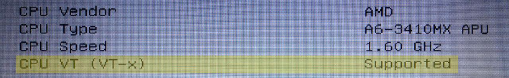

Getting started with virtual machines is straight forward and has very few steps - and you only need to do this once! These instructions should let you accomplish the required steps with ease and then proceed to download your first virtual machine.
Enable Virtualization from BIOS Settings
All virtual machines run inside a program called hypervisor, which rely on a virtualization feature in your processor. Unfortunately this is not enabled by default.
To enter BIOS you need to restart your PC and press the appropriate key (usually ESC, DEL, F1, F2 or F10) during the start-up, before your operating system begins to load.
Virtualization is called either VT-x or AMD-V.
Once in your BIOS settings, first take a look at the system information page - some older PCs do not have a configuration for virtualization and simply list it in the first page as "supported". In such case, you don't need to do anything and can move to installing the hypervisor.
For the rest of us, the virtualization setting can often be found under ...
Install Hypervisor
Which OS are you running? The operating system into which the hypervisor is installed into, is called Host OS, and the installation instructions differ slightly between Linux, MacOS and Windows.
WE NEED SOME WAY TO DISPLAY ONLY RELEVANT CONTENT - maybe tabs? Jani will try to find something clean and simple...
Choose you hypervisor between Oracle's VirtualBox or VMWare's VMPlayer. (DO WE WANT TO RECOMMEND EITHER FOR CERTAIN OS'es? -> MacOS issues. How is Linux?)
Install Add-Ons into the Hypervisor
Linux: ???
MacOS: ?!?!
WINDOWS: Once the download has been completed, locate the extension pack and double-clik it. Follow the instructions of your hypervisor to complete.
All Done!
Next you should go to the download page to download a VM image and to follow the instructions there.